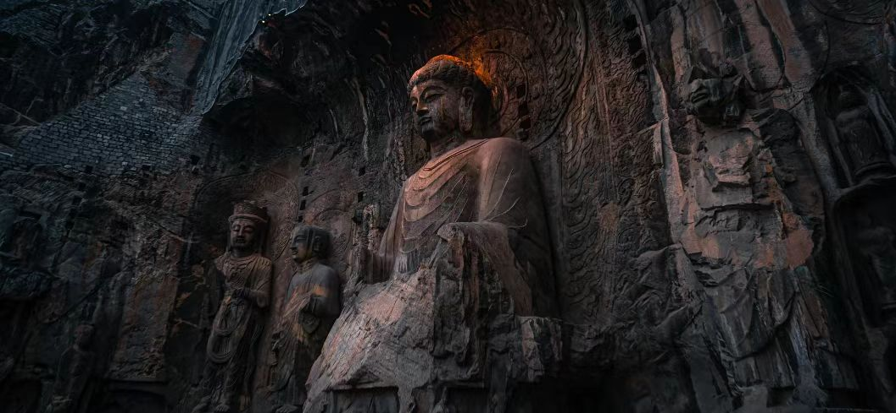

传奇：龙门石窟位于河南省洛阳市洛龙区伊河两岸的龙门山与香山上，是世界上造像最多、规模最大的石刻艺术宝库。与莫高窟、云冈石窟、麦积山石窟并称"中国四大石窟"。始凿于北魏孝文帝迁都洛阳前后（约493年），历经东魏、西魏、北齐、隋、唐、五代、宋等朝代连续大规模营造达400余年，形成南北长达1公里的石窟群。现存窟龛2345个，造像10万余尊，碑刻题记2800余品。2000年被联合国教科文组织列入《世界遗产名录》。
核心看点：
游览攻略：
交通信息：龙门石窟位于洛阳市洛龙区龙门中街13号。公交53路、60路、67路、71路、81路、99路等可达"龙门石窟"站。从洛阳火车站乘81路公交直达，车程40分钟；从洛阳龙门高铁站乘67路公交直达，车程15分钟。景区内有电瓶车往返于西山、东山、香山寺、白园之间。周边有关林、白马寺、洛阳博物馆等景点，建议组合游览。
北魏开凿：北魏太和十八年（494年），孝文帝迁都洛阳，佛教中心随之南移。龙门石窟的开凿始于这一时期，首先是古阳洞的开凿。北魏时期开凿的主要洞窟有古阳洞、宾阳三洞、莲花洞、石窟寺等。这一时期的造像具有"秀骨清像"的特点，佛、菩萨身材修长，面容清瘦，衣纹流畅，体现南朝士大夫的审美。
东魏西魏：北魏分裂为东魏、西魏后，龙门石窟开凿减少，但仍有续凿。东魏天平年间（534-537年），在宾阳南洞、北洞续凿。西魏时期，开凿规模较小。这一时期的造像承袭北魏风格，但艺术水平有所下降。
北齐隋代：北齐时期，佛教艺术发生变化，造像趋向丰满圆润。隋代统一后，龙门石窟开凿复兴。开皇十五年（595年），在宾阳南洞雕阿弥陀佛像。大业年间（605-618年），在古阳洞、宾阳洞续凿。隋代造像风格承前启后，为唐代艺术的繁荣奠定了基础。
唐代鼎盛：唐代是龙门石窟开凿的鼎盛时期，三分之二以上的洞窟开凿于此时。唐太宗、高宗、武则天时期，国力强盛，佛教兴盛，龙门石窟得到大规模开凿。奉先寺、万佛洞、看经寺、惠简洞、极南洞等均为唐代所凿。唐代造像丰满圆润，表情生动，体现大唐气象。武则天时期，为建奉先寺，"助脂粉钱二万贯"，并亲自主持开光仪式。
五代至宋：五代时期，战乱频繁，龙门石窟开凿基本停止。宋代，佛教禅宗盛行，石窟开凿转向摩崖造像和重修。宋真宗、仁宗时期，对部分洞窟进行彩绘、贴金。金代，在极南洞等处续凿。此后，龙门石窟大规模开凿结束。
近代保护：清末民初，龙门石窟遭严重破坏，大量佛头、浮雕被盗卖海外。1936年，民国政府成立"龙门保管所"，开始保护工作。1961年，被列为全国重点文物保护单位。1971年，周恩来总理批示拨款维修奉先寺。2000年，被列入《世界遗产名录》。2007年，成立龙门石窟研究院，开展科学保护与研究。
石窟形制：龙门石窟的窟形多样。①穹窿顶窟：如古阳洞、宾阳中洞，顶部呈穹窿形，象征天穹；②平顶窟：如莲花洞，顶部平整，雕刻莲花等图案；③仿木构窟：如奉先寺，窟檐仿木构建筑，有斗拱、椽、瓦等；④摩崖造像：直接在崖壁上开龛造像，无窟室。这些不同的窟形，反映了不同时期的建筑风格和宗教理念。
雕刻技法：龙门石窟的雕刻技法高超。①圆雕：佛像、菩萨、弟子等主体造像采用圆雕，立体感强；②浮雕：佛本生故事、经变画、供养人、飞天等采用浮雕，有高浮雕、浅浮雕之分；③线刻：衣纹、花纹、题记等采用线刻，线条流畅；④透雕：莲花、华盖等采用透雕，玲珑剔透。不同技法结合，使造像层次丰富，栩栩如生。
造像风格演变：龙门石窟的造像风格经历明显演变。①北魏：秀骨清像，佛、菩萨身材修长，面容清瘦，嘴角微翘，神情超脱，衣纹繁复，体现南朝士族审美；②东魏西魏：承袭北魏风格，但趋于呆板；③北齐：开始向丰满转变；④隋代：承前启后，既有北魏遗风，又开唐代先声；⑤唐代：丰满圆润，佛、菩萨面相丰腴，表情生动，衣纹简洁，体现大唐的自信与开放。这种演变反映了社会审美和佛教观念的变化。
卢舍那大佛艺术：奉先寺卢舍那大佛是龙门石窟的艺术高峰。①面相：丰颐秀目，嘴角微翘，笑容含蓄，既庄严又慈祥；②眼神：双目俯视，与礼佛者视线相接，体现佛的慈悲；③手势：右手施无畏印，表示拔除痛苦；左手施与愿印，表示给予快乐；④衣纹：简洁流畅，薄衣贴体，体现"曹衣出水"风格；⑤比例：头与身比例协调，符合唐代审美。大佛的艺术成就，代表了唐代雕塑的最高水平。
碑刻书法：龙门石窟现存碑刻题记2800余品，是书法艺术的宝库。①"龙门二十品"：选自北魏时期的20方造像题记，是魏碑书法的代表作，包括《始平公造像记》《孙秋生造像记》《杨大眼造像记》等；②唐代题记：有褚遂良、颜真卿、柳公权等名家风格；③药方洞石刻：刻有140多个药方，是医学与书法的结合。这些碑刻是研究书法史、文字学、历史学的重要资料。
彩绘与贴金：石窟造像原均有彩绘和贴金，现多已脱落，但残存部分仍可见当年辉煌。①彩绘：用矿物颜料，有红、绿、蓝、金等色，表现肌肤、服饰、背景等；②贴金：在佛像面部、手部贴金箔，象征佛的金身；③现状：由于自然风化和人为破坏，大部分彩绘、贴金已脱落，仅少数洞窟有残存。现通过科学手段，正在研究恢复原貌。
皇家开凿：龙门石窟是典型的皇家石窟。①北魏：孝文帝开凿古阳洞，宣武帝为父母开凿宾阳三洞；②唐代：唐高宗、武则天开凿奉先寺，武则天"助脂粉钱二万贯"；③其他：唐中宗、睿宗、玄宗等也开凿洞窟。皇家开凿的特点是规模大、艺术精、位置显要。奉先寺卢舍那大佛据传是依照武则天容貌雕刻，体现"皇帝即佛"的观念。
佛教宗派：龙门石窟反映各佛教宗派的兴衰。①北魏：流行禅宗、净土宗，造像多禅定印、说法印；②唐代：密宗、华严宗盛行，奉先寺卢舍那大佛是华严宗教主，万佛洞反映净土信仰；③宋代：禅宗为主，造像减少，摩崖题记增多。不同宗派的教义，通过造像题材、布局、手势等表现出来。
社会供养：除皇家外，贵族、官僚、僧尼、百姓也参与开凿。①贵族：如长乐王丘穆陵亮夫人为亡子开凿古阳洞龛；②官僚：如杨大眼将军开凿"杨大眼造像龛"；③僧尼：如慧成法师开凿古阳洞；④百姓：结社集资开凿小龛。这些供养人造像，反映了不同阶层对佛教的信仰和支持。
文化交流：龙门石窟是中外文化交流的见证。①印度影响：早期造像有犍陀罗、秣菟罗艺术痕迹；②西域影响：通过丝绸之路传入的西域艺术元素；③中原化：外来艺术与中原传统结合，形成中国特色。如卢舍那大佛，既有印度佛像的庄严，又有中原人物的温和，是文化融合的典范。
文学艺术：龙门石窟是文学艺术创作的源泉。①诗歌：李白、白居易、元稹等唐代诗人游览龙门，留下诗篇；②绘画：历代画家以龙门为题材创作；③现代：电影、电视剧、舞蹈、音乐等艺术形式，表现龙门文化。龙门石窟成为中华文化的符号。
节庆活动：龙门石窟有丰富的节庆活动。①佛诞日：农历四月初八，举办浴佛法会；②元宵节：举办灯会，石窟夜景迷人；③牡丹花会：四月牡丹盛开，游客如织；④国际文化旅游节：每年举办，有学术研讨、艺术表演、文物展览等。这些活动传承了龙门文化。
世界遗产价值：2000年11月，龙门石窟被联合国教科文组织列入《世界遗产名录》。世界遗产委员会评价："龙门地区的石窟和佛龛展现了中国北魏晚期至唐代（493-907年）期间，最具规模和最为优秀的造型艺术。这些详实描述佛教宗教题材的艺术作品，代表了中国石刻艺术的最高峰。"龙门石窟符合世界遗产标准：①代表人类创造性天才的杰作；②在一定时期内对建筑艺术、纪念物艺术、城镇规划或景观设计方面的发展产生重大影响；③能为一种已消逝的文明或文化传统提供独特的见证；④可作为一种建筑或建筑群或景观的杰出范例。
历史价值：龙门石窟是400多年佛教史的实物记录。①佛教史：反映了佛教从北魏到宋代的传播、发展、演变；②艺术史：展示了中国石刻艺术从北魏"秀骨清像"到唐代"丰满圆润"的风格演变；③社会史：通过供养人题记，反映了不同时期的社会结构、宗教信仰、经济状况；④中外交流史：体现了印度、中亚艺术与中国传统的融合。龙门石窟是研究中国历史、文化、艺术、宗教的百科全书。
艺术价值：龙门石窟是中国石刻艺术的巅峰。①雕塑艺术：10万余尊造像，造型精美，技艺高超，代表了中国古代雕塑的最高水平；②建筑艺术：2345个窟龛，形制多样，是研究古代建筑的重要资料；③书法艺术：2800余品碑刻题记，涵盖篆、隶、楷、行、草各体，是书法艺术的宝库；④绘画艺术：浮雕中的经变画、佛本生故事等，是研究古代绘画的珍贵资料。龙门石窟是综合性艺术博物馆。
科学价值：龙门石窟蕴含丰富的科学智慧。①地质学：石窟开凿在石灰岩上，研究岩石性质、风化机理；②工程学：古代工匠的开凿技术、支撑结构、排水系统等；③材料学：彩绘颜料、贴金材料的成分、工艺；④环境科学：石窟保护与自然环境的关系；⑤医学：药方洞石刻，是古代医药学的重要资料。现代科学可从龙门石窟中汲取营养。
社会价值：龙门石窟在当代社会具有多重价值。①教育价值：是爱国主义教育基地、传统文化教育基地，每年接待数百万学生；②旅游价值：是国家5A级旅游景区，年接待游客数百万人次，带动地方经济发展；③研究价值：是考古学、艺术史、宗教学、历史学的研究对象；④精神价值：是佛教信众的朝圣地，普通游客的精神家园；⑤国际交流：是中华文化的重要名片，许多外国政要、友人参观龙门石窟。
保护与传承：龙门石窟得到科学保护和合理利用。①法律保护：1961年列为全国重点文物保护单位；②规划保护：编制《龙门石窟保护规划》，划定保护区、缓冲区；③工程保护：实施石窟加固、防水、防风化等工程，如2002年奉先寺加固工程；④科技保护：利用三维扫描、数字建模、环境监测等技术，进行科学保护；⑤研究展示：成立龙门石窟研究院，出版《龙门石窟研究》等著作；⑥活态传承：开展文化创意、数字展示、研学旅行等活动，让文物"活"起来。龙门石窟的保护经验，为世界文化遗产保护提供了范例。